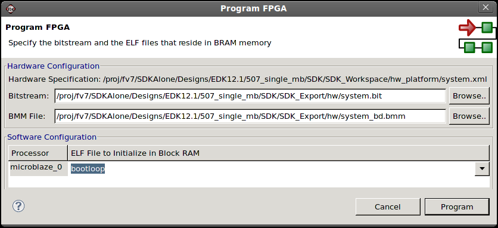

Programming the FPGA
To program the FPGA device with the bitstream, do the following:
- Select Xilinx Tools > Program FPGA.
- In the Bitstream and BMM File fields, specify the bitstream (.bit) and Block RAM Memory Map (.bmm) files to use
for programming the FPGA. If these files are provided as part of
the XPS exported files, SDK will automatically pick them up and populate these fields.
- SDK automatically detects the processors in the system and shows
them in a table at the bottom of the window. Under Software
Configuration, select the executable (.elf) file to initialize at the reset start address for each
processor. This is the program the processor will start
executing when it comes out of reset.
From the drop-down list, you can select BootLoop or Browse to any other ELF
file.
- Click Program.
SDK programs
the FPGA over the JTAG cable using the settings you specified. Depending on the size of the FPGA device and the JTAG cable frequency, programming the FPGA could take longer than expected.


JTAG settings
Embedded hardware components

Configure the JTAG settings
Debugging a program

Program FPGA dialog box
Copyright © 1995-2011 Xilinx, Inc. All rights reserved.